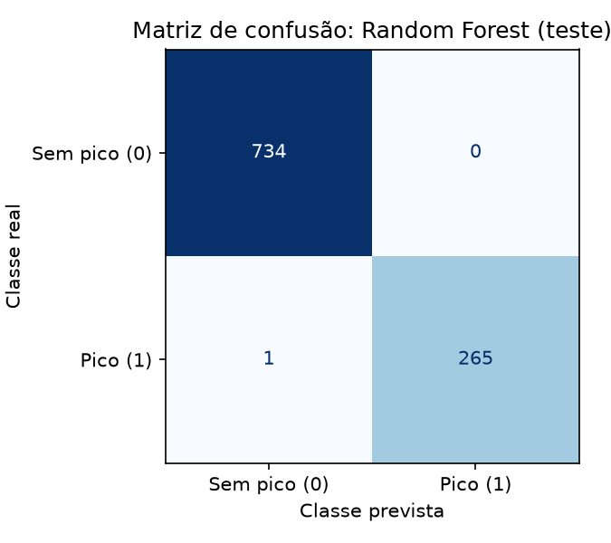

Relatório Técnico: Modelo Preditivo de Pico de Risco Cardíaco
FIAP · Graduação em IA · Fase 6 · Sistema Preditivo Multiagente para Eventos Cardíacos
1. Dados e preparação
Usamos a base sintética do enunciado, gerada com semente 42: 5.000 registros, 10 variáveis numéricas e
o alvo binário pico_risco. O alvo vale 1 quando pelo menos dois de seis critérios estão presentes:
carga > 80%, espera > 60 min, SpO2 < 92%, FC > 110 bpm, eventos 24 h > 4 e recursos < 40%.
A base não tem valores ausentes e é desbalanceada, com 26,6% de picos. Por isso, a separação treino/teste
(80/20) foi estratificada, o que manteve 26,6% de picos nos dois conjuntos. Não foi necessário
padronizar as variáveis para modelos baseados em árvores. Para a Regressão Logística usamos
StandardScaler dentro de um Pipeline, ajustado só no treino, para evitar vazamento de dados.
2. Justificativa do algoritmo
Comparamos três classificadores supervisionados com validação cruzada estratificada de 5 folds no treino.
Em seguida, avaliamos cada um no conjunto de teste, que não foi usado em nenhuma decisão anterior.
| Modelo | F1 (CV, média ± dp) | Acurácia | Precisão | Recall | F1 | ROC AUC |
|---|
| Regressão Logística | 0,643 ± 0,031 | 0,816 | 0,693 | 0,553 | 0,615 | 0,872 |
| Árvore de Decisão (prof. 6) | 0,993 ± 0,003 | 0,997 | 0,996 | 0,992 | 0,994 | 0,996 |
| Random Forest (300 árvores) | 0,995 ± 0,002 | 0,999 | 1,000 | 0,996 | 0,998 | 1,000 |
Escolhemos o Random Forest por três motivos. Primeiro, o alvo é construído com limites por variável e
uma contagem de critérios. Esse padrão é exatamente o que uma árvore aprende com seus cortes, enquanto a fronteira
"2 de 6 critérios" não é linear, o que explica o F1 de apenas 0,64 da Regressão Logística. Segundo, o ensemble de
árvores tem variância menor que uma árvore isolada, o que se vê no menor desvio entre os folds. Terceiro, ele produz
probabilidades via predict_proba, que o sistema multiagente usa para classificar o risco em
BAIXO (< 0,30), MODERADO (0,30 a 0,69) e ALTO (≥ 0,70).
3. Interpretação das métricas
- Acurácia de 99,9%: o modelo errou 1 de 1.000 casos de teste. Como a base é desbalanceada, essa métrica
sozinha não basta, pois um modelo que dissesse sempre "sem pico" já teria 73,4% de acurácia.
- Recall de 99,6% na classe de pico é a métrica mais importante neste domínio, porque mede quantos
picos reais foram detectados. Deixar de sinalizar um pico custa mais que um alarme falso.
- Precisão de 100%: todo alerta emitido no teste correspondia a um pico real, sem alarmes falsos.
- ROC AUC de 1,00: as probabilidades ordenam perfeitamente os casos, o que valida o uso de faixas de probabilidade.
4. Análise da matriz de confusão

No conjunto de teste, com 1.000 casos:
- 734 verdadeiros negativos: casos sem pico corretamente descartados.
- 265 verdadeiros positivos: picos corretamente detectados.
- 0 falsos positivos: nenhum alarme desnecessário.
- 1 falso negativo: um único pico não detectado. É um caso de fronteira: carga de 90,8% e tempo de
espera de 60,009 min, apenas 0,009 min acima do limite de 60. O modelo deu probabilidade de 0,45. Com o limiar
padrão de 0,5 ele vira falso negativo, mas o sistema multiagente o classifica como risco MODERADO, e não
BAIXO, o que ainda gera alerta.
A importância das variáveis confirma que o modelo aprendeu a estrutura certa. Carga, recursos, espera e SpO2
somam 83% da importância. FC e eventos 24 h vêm em seguida, porque seus limites são raros na base. Idade, PA,
temperatura e densidade de eventos não fazem parte da regra e ficam com importância próxima de zero.
5. Limitações
- Desempenho otimista. O alvo é uma função determinística e sem ruído das próprias entradas. O modelo
essencialmente redescobre a regra de geração. Em dados reais, com erro de medição e fatores não observados, as
métricas seriam bem menores.
- Variáveis sem relação clínica. A temperatura simulada tem média de 24 °C, valor que parece ambiental e não
corporal. Idade e PA não influenciam o alvo, embora sejam fatores de risco cardíaco conhecidos.
- Mistura de níveis. As variáveis misturam dados do paciente, como FC e SpO2, com dados do sistema, como carga
e recursos. Isso dificulta interpretar o resultado como risco individual.
- Sensibilidade aos limites. Pequenas variações perto dos cortes mudam a previsão de forma brusca. No paciente de exemplo
de risco moderado, um tempo de espera de 60 min gera probabilidade de 0,40, enquanto 61 min gera 0,95.
- Sem calibração nem validação externa. As probabilidades não foram calibradas e o modelo não foi testado
em outra população.
6. Melhorias propostas
- Treinar com dados reais ou com uma base sintética que inclua ruído e rótulos clínicos, e repetir a validação.
- Calibrar as probabilidades com
CalibratedClassifierCV e escolher o limiar de decisão pela curva
precisão-recall, priorizando o recall.
- Ajustar hiperparâmetros com
GridSearchCV e explicar previsões individuais com SHAP.
- Separar variáveis do paciente e do sistema em modelos distintos ou em agentes distintos.
- Monitorar desvio de dados (data drift) em produção e retreinar periodicamente.